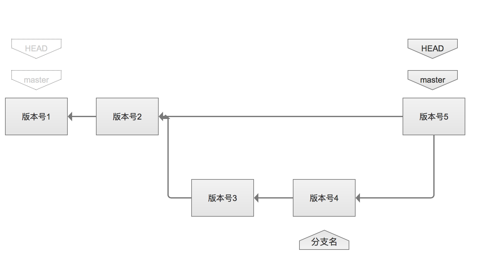

<!DOCTYPE html>
<html>
<head><meta name="generator" content="Hexo 3.8.0">
  <meta charset="utf-8">
  
  <title>git常用命令 | guowj</title>
  <meta name="viewport" content="width=device-width, initial-scale=1, maximum-scale=1">
  
  <meta name="keywords" content="版本管理工具">
  
  
  
  
  <meta name="description" content="&amp;nbsp;&amp;nbsp;&amp;nbsp;&amp;nbsp;&amp;nbsp;&amp;nbsp;Git 是一个版本管理工具，和 SVN 不同的是，SVN 是集中式的版本控制系统，Git 是分布式版本控制系统。这篇文章主要是简单总结下 Git 和一些常用的 git 命令。">
<meta name="keywords" content="版本管理工具">
<meta property="og:type" content="article">
<meta property="og:title" content="Git常用命令">
<meta property="og:url" content="https://gwjacqueline.github.io/Git常用命令/index.html">
<meta property="og:site_name" content="guowj">
<meta property="og:description" content="&amp;nbsp;&amp;nbsp;&amp;nbsp;&amp;nbsp;&amp;nbsp;&amp;nbsp;Git 是一个版本管理工具，和 SVN 不同的是，SVN 是集中式的版本控制系统，Git 是分布式版本控制系统。这篇文章主要是简单总结下 Git 和一些常用的 git 命令。">
<meta property="og:locale" content="zh-CN">
<meta property="og:image" content="https://gwjacqueline.github.io/images/git.png">
<meta property="og:updated_time" content="2019-05-14T13:04:12.000Z">
<meta name="twitter:card" content="summary">
<meta name="twitter:title" content="Git常用命令">
<meta name="twitter:description" content="&amp;nbsp;&amp;nbsp;&amp;nbsp;&amp;nbsp;&amp;nbsp;&amp;nbsp;Git 是一个版本管理工具，和 SVN 不同的是，SVN 是集中式的版本控制系统，Git 是分布式版本控制系统。这篇文章主要是简单总结下 Git 和一些常用的 git 命令。">
<meta name="twitter:image" content="https://gwjacqueline.github.io/images/git.png">
  
    <link rel="alternate" href="/atom.xml" title="guowj" type="application/atom+xml">
  

  

  <link rel="icon" href="/css/images/mylogo.png">
  <link rel="apple-touch-icon" href="/css/images/mylogo.png">
  
    <link href="//fonts.googleapis.com/css?family=Source+Code+Pro" rel="stylesheet" type="text/css">
  
  <link href="https://fonts.googleapis.com/css?family=Open+Sans|Montserrat:700" rel="stylesheet" type="text/css">
  <link href="https://fonts.googleapis.com/css?family=Roboto:400,300,300italic,400italic" rel="stylesheet" type="text/css">
  <link href="//netdna.bootstrapcdn.com/font-awesome/4.0.3/css/font-awesome.css" rel="stylesheet">
  <style type="text/css">
    @font-face{font-family:futura-pt; src:url("../css/fonts/FuturaPTBold.otf") format("woff");font-weight:500;font-style:normal;}
    @font-face{font-family:futura-pt-light; src:url("../css/fonts/FuturaPTBook.otf") format("woff");font-weight:lighter;font-style:normal;}
    @font-face{font-family:futura-pt-italic; src:url("../css/fonts/FuturaPTBookOblique.otf") format("woff");font-weight:400;font-style:italic;}
}

  </style>
  <link rel="stylesheet" href="/css/style.css">

  <script src="/js/jquery-3.1.1.min.js"></script>
  <script src="/js/bootstrap.js"></script>

  <!-- Bootstrap core CSS -->
  <link rel="stylesheet" href="/css/bootstrap.css">

  
    <link rel="stylesheet" href="/css/dialog.css">
  

  

  
    <link rel="stylesheet" href="/css/header-post.css">
  

  
  
  
    <link rel="stylesheet" href="/css/vdonate.css">
  

</head>
</html>


  <body data-spy="scroll" data-target="#toc" data-offset="50">


  
  <div id="container">
    <div id="wrap">
      
        <header>

    <div id="allheader" class="navbar navbar-default navbar-static-top" role="navigation">
        <div class="navbar-inner">
          
          <div class="container"> 
            <button type="button" class="navbar-toggle" data-toggle="collapse" data-target=".navbar-collapse">
              <span class="sr-only">Toggle navigation</span>
              <span class="icon-bar"></span>
              <span class="icon-bar"></span>
              <span class="icon-bar"></span>
            </button>

            
              <a class="brand" style="
                 margin-top: 0px;" href="#" data-toggle="modal" data-target="#myModal">
                  
              </a>
            
            
            <div class="navbar-collapse collapse">
              <ul class="hnav navbar-nav">
                
                  <li> <a class="main-nav-link" href="/">首页</a> </li>
                
                  <li> <a class="main-nav-link" href="/archives">归档</a> </li>
                
                  <li> <a class="main-nav-link" href="/categories">分类</a> </li>
                
                  <li> <a class="main-nav-link" href="/tags">标签</a> </li>
                
                  <li><div id="search-form-wrap">

    <form class="search-form">
        <input type="text" class="ins-search-input search-form-input" placeholder>
        <button type="submit" class="search-form-submit"></button>
    </form>
    <div class="ins-search">
    <div class="ins-search-mask"></div>
    <div class="ins-search-container">
        <div class="ins-input-wrapper">
            <input type="text" class="ins-search-input" placeholder="请输入关键词...">
            <span class="ins-close ins-selectable"><i class="fa fa-times-circle"></i></span>
        </div>
        <div class="ins-section-wrapper">
            <div class="ins-section-container"></div>
        </div>
    </div>
</div>
<script>
(function (window) {
    var INSIGHT_CONFIG = {
        TRANSLATION: {
            POSTS: '文章',
            PAGES: '页面',
            CATEGORIES: '分类',
            TAGS: '标签',
            UNTITLED: '(无标题)',
        },
        ROOT_URL: '/',
        CONTENT_URL: '/content.json',
    };
    window.INSIGHT_CONFIG = INSIGHT_CONFIG;
})(window);
</script>
<script src="/js/insight.js"></script>

</div></li>
            </ul></div>
          </div>
                
      </div>
    </div>

</header>


      
            
      <div id="content" class="outer">
        
          <section id="main" style="float:none;"><article id="post-Git常用命令" style="width: 75%; float:left;" class="article article-type-post" itemscope itemprop="blogPost">
  <div id="articleInner" class="article-inner">
    
    
      <header class="article-header">
        
  
    <h1 class="thumb" itemprop="name">
      Git常用命令
    </h1>
  

      </header>
    
    <div class="article-meta">
      
	<a href="/Git常用命令/" class="article-date">
	  <time datetime="2019-05-11T01:25:32.000Z" itemprop="datePublished">2019-05-11</time>
	</a>

      
    <a class="article-category-link" href="/categories/工具/">工具</a>

      
	<a class="article-views">
	<span id="busuanzi_container_page_pv">
		阅读量<span id="busuanzi_value_page_pv"></span>
	</span>
	</a>

      

    </div>
    <div class="article-entry" itemprop="articleBody">
      
        <blockquote>
<p>&nbsp;&nbsp;&nbsp;&nbsp;&nbsp;&nbsp;Git 是一个版本管理工具，和 SVN 不同的是，SVN 是集中式的版本控制系统，Git 是分布式版本控制系统。这篇文章主要是简单总结下 Git 和一些常用的 git 命令。</p>
</blockquote>
<a id="more"></a>
<h1 id="Git"><a href="#Git" class="headerlink" title="Git"></a>Git</h1><h2 id="Git-的区域"><a href="#Git-的区域" class="headerlink" title="Git 的区域"></a>Git 的区域</h2><p>1.工作区（working tree）<br> 2.暂存区（stage）<br> 3.版本库（repository）<br></p>
<h2 id="Git-文件的四种转态"><a href="#Git-文件的四种转态" class="headerlink" title="Git 文件的四种转态"></a>Git 文件的四种转态</h2><p>1.Untracked(未被跟踪)<br><br>此文件在文件夹中,还没有加入到 git 库,不参与版本控制。通过 git add 状态变为 暂存状态<br>2.Modified<br><br>表示工作区修改了某个文件，但是还没有添加到暂存区<br>3.Staged<br><br>表示工作区修改的文件添加到了暂存区但是还没有添加到版本库<br>4.committed<br><br>表示数据被安全的存在本地库中</p>
<h1 id="常用命令"><a href="#常用命令" class="headerlink" title="常用命令"></a>常用命令</h1><h2 id="基础命令"><a href="#基础命令" class="headerlink" title="基础命令"></a>基础命令</h2><p>初始化本地仓库</p>
<figure class="highlight plain"><table><tr><td class="gutter"><pre><span class="line">1</span><br></pre></td><td class="code"><pre><span class="line">git init</span><br></pre></td></tr></table></figure>
<p>查看工作区、暂存区的状态</p>
<figure class="highlight plain"><table><tr><td class="gutter"><pre><span class="line">1</span><br></pre></td><td class="code"><pre><span class="line">git status</span><br></pre></td></tr></table></figure>
<p>将工作区新建/修改的内容添加到暂存区</p>
<figure class="highlight plain"><table><tr><td class="gutter"><pre><span class="line">1</span><br></pre></td><td class="code"><pre><span class="line">git add &lt;file&gt;</span><br></pre></td></tr></table></figure>
<p>将暂存区的内容提交到本地库</p>
<figure class="highlight plain"><table><tr><td class="gutter"><pre><span class="line">1</span><br></pre></td><td class="code"><pre><span class="line">git commit -m &quot;备注&quot;</span><br></pre></td></tr></table></figure>
<p>查看历史记录</p>
<figure class="highlight plain"><table><tr><td class="gutter"><pre><span class="line">1</span><br></pre></td><td class="code"><pre><span class="line">git log</span><br></pre></td></tr></table></figure>
<p>新增、更改 Git 的各种设置</p>
<figure class="highlight plain"><table><tr><td class="gutter"><pre><span class="line">1</span><br><span class="line">2</span><br><span class="line">3</span><br><span class="line">4</span><br></pre></td><td class="code"><pre><span class="line">git config</span><br><span class="line">//例如配置系统级别签名</span><br><span class="line">git config --global user.name &quot;&lt;username&gt;&quot;</span><br><span class="line">git config --global user.email &quot;&lt;eamil&gt;&quot;</span><br></pre></td></tr></table></figure>
<p>删除某个文件</p>
<figure class="highlight plain"><table><tr><td class="gutter"><pre><span class="line">1</span><br></pre></td><td class="code"><pre><span class="line">git rm --cached &lt;file&gt;;</span><br></pre></td></tr></table></figure>
<p>上传到远程仓库</p>
<figure class="highlight plain"><table><tr><td class="gutter"><pre><span class="line">1</span><br><span class="line">2</span><br><span class="line">3</span><br><span class="line">4</span><br></pre></td><td class="code"><pre><span class="line">//增加一个名称为origin远程仓库</span><br><span class="line">git remote add origin &lt;address&gt;</span><br><span class="line">//推送远程仓库</span><br><span class="line">git push -f origin master</span><br></pre></td></tr></table></figure>
<p>克隆到本地</p>
<figure class="highlight plain"><table><tr><td class="gutter"><pre><span class="line">1</span><br></pre></td><td class="code"><pre><span class="line">git clone &lt;address&gt;</span><br></pre></td></tr></table></figure>
<h2 id="撤销操作"><a href="#撤销操作" class="headerlink" title="撤销操作"></a>撤销操作</h2><p>撤销上一次的提交，并将暂存区的文件重新提交，如果没有修改信息的话，就只是提交描述信息</p>
<figure class="highlight plain"><table><tr><td class="gutter"><pre><span class="line">1</span><br></pre></td><td class="code"><pre><span class="line">git commit —amend</span><br></pre></td></tr></table></figure>
<p>拉取暂存区文件 并将其替换成工作区文件</p>
<figure class="highlight plain"><table><tr><td class="gutter"><pre><span class="line">1</span><br></pre></td><td class="code"><pre><span class="line">git checkout -- &lt;file&gt;</span><br></pre></td></tr></table></figure>
<p>拉取最近一次提交到版本库的文件到暂存区，该操作不影响工作区</p>
<figure class="highlight plain"><table><tr><td class="gutter"><pre><span class="line">1</span><br><span class="line">2</span><br></pre></td><td class="code"><pre><span class="line">//HEAD也可以直接换成版本号</span><br><span class="line">git rest HEAD &lt;file&gt;</span><br></pre></td></tr></table></figure>
<p>以上两条操作会导致：暂存区和本地文件不一样，暂存区和版本库不一样。<br>需要使<strong>git checkout –[file]</strong>命令来把 暂存区文件拉到工作区再将暂存区的文件拉回到工作区中。</p>
<h2 id="分支操作"><a href="#分支操作" class="headerlink" title="分支操作"></a>分支操作</h2><p>&nbsp;&nbsp;&nbsp;&nbsp;&nbsp;&nbsp;创建分支的好处是不会影响当前主线的文件。 比如再已上线的代码中新增需求时，在我们自己的分支中操作不会影响主线的项目。</p>
<p>查看当前分支</p>
<figure class="highlight plain"><table><tr><td class="gutter"><pre><span class="line">1</span><br></pre></td><td class="code"><pre><span class="line">git branch</span><br></pre></td></tr></table></figure>
<p>创建分支</p>
<figure class="highlight plain"><table><tr><td class="gutter"><pre><span class="line">1</span><br><span class="line">2</span><br></pre></td><td class="code"><pre><span class="line">//注意新分支创建后不会自动切换为当前分支</span><br><span class="line">git branch &lt;name&gt;</span><br></pre></td></tr></table></figure>
<p>创建新分支并立即切换到新分支</p>
<figure class="highlight plain"><table><tr><td class="gutter"><pre><span class="line">1</span><br></pre></td><td class="code"><pre><span class="line">git checkout -b &lt;name&gt;</span><br></pre></td></tr></table></figure>
<p>删除分支</p>
<figure class="highlight plain"><table><tr><td class="gutter"><pre><span class="line">1</span><br><span class="line">2</span><br></pre></td><td class="code"><pre><span class="line">//d选项只能删除已经参与了合并的分支，对于未有合并的分支是无法删除的。如果想强制删除一个分支，可以使用-D选项</span><br><span class="line">git branch -d [name]</span><br></pre></td></tr></table></figure>
<p>切换分支</p>
<figure class="highlight plain"><table><tr><td class="gutter"><pre><span class="line">1</span><br></pre></td><td class="code"><pre><span class="line">git checkout &lt;name&gt;</span><br></pre></td></tr></table></figure>
<p>切换主线</p>
<figure class="highlight plain"><table><tr><td class="gutter"><pre><span class="line">1</span><br></pre></td><td class="code"><pre><span class="line">git checkout master</span><br></pre></td></tr></table></figure>
<p>提交分支到远程仓库</p>
<figure class="highlight plain"><table><tr><td class="gutter"><pre><span class="line">1</span><br></pre></td><td class="code"><pre><span class="line">git push -u origin &lt;name&gt;</span><br></pre></td></tr></table></figure>
<p>删除远程分支</p>
<figure class="highlight plain"><table><tr><td class="gutter"><pre><span class="line">1</span><br></pre></td><td class="code"><pre><span class="line">git push -u origin --delete &lt;name&gt;</span><br></pre></td></tr></table></figure>
<h3 id="Git-指针"><a href="#Git-指针" class="headerlink" title="Git 指针"></a>Git 指针</h3><p><div align="center"><br>  <br></div><br>&nbsp;&nbsp;&nbsp;&nbsp;&nbsp;&nbsp;上面这张图能够更快的帮我们理解git指针。版本号1，2，5为master主线，版本号3，4为dev分支。首先，当我们提交了一个版本的时候，就会有一个版本号，就有两个指针指向我们的版本。一个是master分支，一个是HEAD指针，指向当前分支的最后一个版本。当我们修改文件，再次提交后，会有一个新的版本号，同时，我们的分支和HEAD指针也会指向我们最后一次提交。最新版本中也有一个指针指向前一个版本。指针是我们文件中有一块地方保存其他模块的地址。当我们调用其他模块的时候，可以通过这个模块找到其他模块的地址。从而调用其他模块，达到方便访问其他模块的目的。master分支保存了M2版本的地址。同样的再提交一个版本，master指针和HEAD指针都会向前移。当我们再这里新建了一个分支时，比如dev分支。master分支仍会指向版本号二。新建的这个分支会指向版本号三，而HEAD指针从版本号2移到了版本号3.只有当从master分支的版本号2切换到dev 分支的版本号3的时候，HEAD指针会从版本号2移到版本号3。HEAD指针永远指向当前分支的最新版本。当提交到版本号4后，dev分支会和HEAD同时指向最新版本。当这个时候想合并我们的dev分支和master分支时。形成了版本号5分支，版本号5即指向我们的版本号2,又指向版本号4，也就是说他能很快速的访问版本号2,也可以很快速的访问版本号4。分支的指针仅仅保存的是地址。当我们切换版本时，当我们从一个版本回退到另一个版本的时候，分支的指针是直接将他们的地址进行更改。从我们的版本号5的地址换成了版本号2的地址。所以git版本的回退特别快。切换分支时，git是通过判断HEAD是不是指向当前版本。</p>
<h2 id="合并分支及冲突解决"><a href="#合并分支及冲突解决" class="headerlink" title="合并分支及冲突解决"></a>合并分支及冲突解决</h2><p>合并分支</p>
<figure class="highlight plain"><table><tr><td class="gutter"><pre><span class="line">1</span><br></pre></td><td class="code"><pre><span class="line">git merge &lt;name&gt;</span><br></pre></td></tr></table></figure>
<p>冲突解决<br><br>在使用 Git 进行多人合作的时候 我们时常会出现冲突。比如我们在分支 A 修改了 index.html 文件并提交到了分支 A 的版本库，同时 master 分支也修改了该文件。即主分支和我们要合并的分支都发生了修改 这时系统就不知道我们要保留哪一个文件 就会发生冲突</p>
<figure class="highlight plain"><table><tr><td class="gutter"><pre><span class="line">1</span><br></pre></td><td class="code"><pre><span class="line">CONFLICT（content）：Merge conflict in index.html</span><br></pre></td></tr></table></figure>
<p>修改冲突文件:我们发现系统把 Master 和 A 分支的内容都列出来了。这时我们想保留那个就把另一个删除即可。然后再添加并提交，就可以合并成功啦。</p>
<figure class="highlight plain"><table><tr><td class="gutter"><pre><span class="line">1</span><br><span class="line">2</span><br><span class="line">3</span><br><span class="line">4</span><br><span class="line">5</span><br></pre></td><td class="code"><pre><span class="line">&lt;&lt;&lt;&lt;&lt;&lt;&lt; HEAD</span><br><span class="line">&lt;p&gt;Hello world!&lt;/p&gt;</span><br><span class="line">=======</span><br><span class="line">&lt;p&gt;Hello world2!&lt;/p&gt;</span><br><span class="line">&gt;&gt;&gt;&gt;&gt;&gt;&gt; A</span><br></pre></td></tr></table></figure>
<h2 id="版本差异比较"><a href="#版本差异比较" class="headerlink" title="版本差异比较"></a>版本差异比较</h2><p>比较工作区和暂存区文件的差异</p>
<figure class="highlight plain"><table><tr><td class="gutter"><pre><span class="line">1</span><br></pre></td><td class="code"><pre><span class="line">git diff</span><br></pre></td></tr></table></figure>
<p>比较暂存区和版本库之间的差异</p>
<figure class="highlight plain"><table><tr><td class="gutter"><pre><span class="line">1</span><br></pre></td><td class="code"><pre><span class="line">git diff — staged</span><br></pre></td></tr></table></figure>
<p>比较两个版本之间的差异</p>
<figure class="highlight plain"><table><tr><td class="gutter"><pre><span class="line">1</span><br><span class="line">2</span><br></pre></td><td class="code"><pre><span class="line">//版本号最少选4个，git默认是7个，最好选8-10个，这样能保证唯一性</span><br><span class="line">git diff &lt;version&gt; &lt;version&gt;</span><br></pre></td></tr></table></figure>
<p>两个分支之间的差异</p>
<figure class="highlight plain"><table><tr><td class="gutter"><pre><span class="line">1</span><br></pre></td><td class="code"><pre><span class="line">git diff &lt;branch&gt; &lt;branch&gt;</span><br></pre></td></tr></table></figure>
<h2 id="存储变更"><a href="#存储变更" class="headerlink" title="存储变更"></a>存储变更</h2><p>&nbsp;&nbsp;&nbsp;&nbsp;&nbsp;&nbsp;上切换分支前，需要把当前分支的修改提交，或者放到暂存区中，否则会报错。<br><br>解决：将工作区修改的内容暂存起来,并自动切换到修改前的工作区状态</p>
<figure class="highlight plain"><table><tr><td class="gutter"><pre><span class="line">1</span><br></pre></td><td class="code"><pre><span class="line">git stash</span><br></pre></td></tr></table></figure>
<p>&nbsp;&nbsp;&nbsp;&nbsp;&nbsp;&nbsp;暂存后，再切换分支就不会报错了。git 在进行分支切换时，它主要改变我们的版本库。当工作区有改变时，会将我们工作区的文件直接覆盖到另外一个分支上去，从而影响另外一个分支。所以使用 git stash 时，将工作区和暂存区的东西封存。git 也会自动将工作区的改变变回改变前的转态<br><br>查看保存内容列表</p>
<figure class="highlight plain"><table><tr><td class="gutter"><pre><span class="line">1</span><br></pre></td><td class="code"><pre><span class="line">git stash  list</span><br></pre></td></tr></table></figure>
<p>git stash list 后看到暂存区的东西</p>
<figure class="highlight plain"><table><tr><td class="gutter"><pre><span class="line">1</span><br><span class="line">2</span><br></pre></td><td class="code"><pre><span class="line">stash@&#123;0&#125;: WIP on master: 452b08d rename hello as hello.c</span><br><span class="line">stash@&#123;1&#125;: WIP on master: 452b08d rename hello as hello.c</span><br></pre></td></tr></table></figure>
<p>将暂存区的东西拉回工作区</p>
<figure class="highlight plain"><table><tr><td class="gutter"><pre><span class="line">1</span><br></pre></td><td class="code"><pre><span class="line">git stash apply stash@&#123;x&#125;</span><br></pre></td></tr></table></figure>
<p>将暂存区的东西删除</p>
<figure class="highlight plain"><table><tr><td class="gutter"><pre><span class="line">1</span><br></pre></td><td class="code"><pre><span class="line">git stash drop stash@&#123;x&#125;</span><br></pre></td></tr></table></figure>
<p>将暂存区的东西拉回工作区并删除</p>
<figure class="highlight plain"><table><tr><td class="gutter"><pre><span class="line">1</span><br></pre></td><td class="code"><pre><span class="line">git stash apply stash@&#123;x&#125;</span><br></pre></td></tr></table></figure>
<h2 id="忽略不想上传的文件"><a href="#忽略不想上传的文件" class="headerlink" title="忽略不想上传的文件"></a>忽略不想上传的文件</h2><p>将忽略的文件名/文件夹名放在.gitignore<br>.gitignore</p>
<figure class="highlight plain"><table><tr><td class="gutter"><pre><span class="line">1</span><br><span class="line">2</span><br><span class="line">3</span><br></pre></td><td class="code"><pre><span class="line">node_modules/</span><br><span class="line">/dist/</span><br><span class="line">npm-debug.log</span><br></pre></td></tr></table></figure>

      
    </div>
    <footer class="article-footer">
      
        <div id="donation_div"></div>

<script src="/js/vdonate.js"></script>
<script>
var a = new Donate({
  title: '如果觉得我的文章对您有用，请随意打赏。您的支持将鼓励我继续创作!', // 可选参数，打赏标题
  btnText: '打赏支持', // 可选参数，打赏按钮文字
  el: document.getElementById('donation_div'),
  wechatImage: '../images/wx.jpeg',
  alipayImage: '../images/zfb.jpg'
});
</script>
      
      
      <div>
        <ul class="post-copyright">
          <li class="post-copyright-author">
          <strong>本文作者:  </strong>guowj
          </li>
          <li class="post-copyright-link">
          <strong>本文链接:  </strong>
          <a href="/Git常用命令/" target="_blank" title="Git常用命令">https://gwjacqueline.github.io/Git常用命令/</a>
          </li>
          <li class="post-copyright-license">
            <strong>版权声明:   </strong>
            本博客所有文章除特别声明外，均采用 <a rel="license" href="https://creativecommons.org/licenses/by-nc-nd/4.0/" target="_blank" title="Attribution-NonCommercial-NoDerivatives 4.0 International (CC BY-NC-ND 4.0)">CC BY-NC-ND 4.0</a>
            许可协议。转载请注明出处
          </li>
         
        </ul>
<div>
</div></div>
      
      
        
	<div id="comment">
		<!-- 来必力City版安装代码 -->
		<div id="lv-container" data-id="city" data-uid="MTAyMC80MzU1OS8yMDA5OA==" ">
		<script type="text/javascript">
		   (function(d, s) {
		       var j, e = d.getElementsByTagName(s)[0];

		       if (typeof LivereTower === 'function') { return; }

		       j = d.createElement(s);
		       j.src = 'https://cdn-city.livere.com/js/embed.dist.js';
		       j.async = true;

		       e.parentNode.insertBefore(j, e);
		   })(document, 'script');
		</script>
		<noscript>为正常使用来必力评论功能请激活JavaScript</noscript>
		</div>
		<!-- City版安装代码已完成 -->
	</div>


      
      
        
  <ul class="article-tag-list"><li class="article-tag-list-item"><a class="article-tag-list-link" href="/tags/版本管理工具/">版本管理工具</a></li></ul>

      

    </footer>
  </div>
  
    
<nav id="article-nav">
  
    <a href="/Vue实例生命周期/" id="article-nav-newer" class="article-nav-link-wrap">
      <strong class="article-nav-caption">上一篇</strong>
      <div class="article-nav-title">
        
          Vue实例生命周期
        
      </div>
    </a>
  
  
    <a href="/走进Webpack的大门/" id="article-nav-older" class="article-nav-link-wrap">
      <strong class="article-nav-caption">下一篇</strong>
      <div class="article-nav-title">走进Webpack的大门</div>
    </a>
  
</nav>

  
</article>

<!-- Table of Contents -->

  <aside id="toc-sidebar">
    <div id="toc" class="toc-article">
    <strong class="toc-title">文章目录</strong>
    
        <ol class="nav"><li class="nav-item nav-level-1"><a class="nav-link" href="#Git"><span class="nav-number">1.</span> <span class="nav-text">Git</span></a><ol class="nav-child"><li class="nav-item nav-level-2"><a class="nav-link" href="#Git-的区域"><span class="nav-number">1.1.</span> <span class="nav-text">Git 的区域</span></a></li><li class="nav-item nav-level-2"><a class="nav-link" href="#Git-文件的四种转态"><span class="nav-number">1.2.</span> <span class="nav-text">Git 文件的四种转态</span></a></li></ol></li><li class="nav-item nav-level-1"><a class="nav-link" href="#常用命令"><span class="nav-number">2.</span> <span class="nav-text">常用命令</span></a><ol class="nav-child"><li class="nav-item nav-level-2"><a class="nav-link" href="#基础命令"><span class="nav-number">2.1.</span> <span class="nav-text">基础命令</span></a></li><li class="nav-item nav-level-2"><a class="nav-link" href="#撤销操作"><span class="nav-number">2.2.</span> <span class="nav-text">撤销操作</span></a></li><li class="nav-item nav-level-2"><a class="nav-link" href="#分支操作"><span class="nav-number">2.3.</span> <span class="nav-text">分支操作</span></a><ol class="nav-child"><li class="nav-item nav-level-3"><a class="nav-link" href="#Git-指针"><span class="nav-number">2.3.1.</span> <span class="nav-text">Git 指针</span></a></li></ol></li><li class="nav-item nav-level-2"><a class="nav-link" href="#合并分支及冲突解决"><span class="nav-number">2.4.</span> <span class="nav-text">合并分支及冲突解决</span></a></li><li class="nav-item nav-level-2"><a class="nav-link" href="#版本差异比较"><span class="nav-number">2.5.</span> <span class="nav-text">版本差异比较</span></a></li><li class="nav-item nav-level-2"><a class="nav-link" href="#存储变更"><span class="nav-number">2.6.</span> <span class="nav-text">存储变更</span></a></li><li class="nav-item nav-level-2"><a class="nav-link" href="#忽略不想上传的文件"><span class="nav-number">2.7.</span> <span class="nav-text">忽略不想上传的文件</span></a></li></ol></li></ol>
    
    </div>
  </aside>

</section>
        
      </div>
      
      <footer id="footer">
  

  <div class="container">
      	<div class="row">
	      <!--<p> Powered by <a href="http://hexo.io/" target="_blank">Hexo</a> and <a href="https://github.com/iTimeTraveler/hexo-theme-hiker" target="_blank">Hexo-theme-hiker</a> </p>-->
	      <p id="copyRightEn">Copyright &copy;2019 guowj All Rights Reserved.</p>
	      
	      
    		<p class="busuanzi_uv">
				访客数 : <span id="busuanzi_value_site_uv"></span> |  
				访问量 : <span id="busuanzi_value_site_pv"></span>
		    </p>
  		   
		</div>

		
  </div>
</footer>


<!-- min height -->

<script>
    var wrapdiv = document.getElementById("wrap");
    var contentdiv = document.getElementById("content");
    var allheader = document.getElementById("allheader");

    wrapdiv.style.minHeight = document.body.offsetHeight + "px";
    if (allheader != null) {
      contentdiv.style.minHeight = document.body.offsetHeight - allheader.offsetHeight - document.getElementById("footer").offsetHeight + "px";
    } else {
      contentdiv.style.minHeight = document.body.offsetHeight - document.getElementById("footer").offsetHeight + "px";
    }
</script>
    </div>
    <!-- <nav id="mobile-nav">
  
    <a href="/" class="mobile-nav-link">Home</a>
  
    <a href="/archives" class="mobile-nav-link">Archives</a>
  
    <a href="/categories" class="mobile-nav-link">Categories</a>
  
    <a href="/tags" class="mobile-nav-link">Tags</a>
  
</nav> -->
    

<!-- mathjax config similar to math.stackexchange -->

<script type="text/x-mathjax-config">
  MathJax.Hub.Config({
    tex2jax: {
      inlineMath: [ ['$','$'], ["\\(","\\)"] ],
      processEscapes: true
    }
  });
</script>

<script type="text/x-mathjax-config">
    MathJax.Hub.Config({
      tex2jax: {
        skipTags: ['script', 'noscript', 'style', 'textarea', 'pre', 'code']
      }
    });
</script>

<script type="text/x-mathjax-config">
    MathJax.Hub.Queue(function() {
        var all = MathJax.Hub.getAllJax(), i;
        for(i=0; i < all.length; i += 1) {
            all[i].SourceElement().parentNode.className += ' has-jax';
        }
    });
</script>

<script type="text/javascript" src="https://cdnjs.cloudflare.com/ajax/libs/mathjax/2.7.1/MathJax.js?config=TeX-AMS-MML_HTMLorMML">
</script>


  <link rel="stylesheet" href="/fancybox/jquery.fancybox.css">
  <script src="/fancybox/jquery.fancybox.pack.js"></script>


<script src="/js/scripts.js"></script>


  <script src="/js/dialog.js"></script>


	<div style="display: none;">
    <script src="https://s95.cnzz.com/z_stat.php?id=1260716016&web_id=1260716016" language="JavaScript"></script>
  </div>


	<script async src="//busuanzi.ibruce.info/busuanzi/2.3/busuanzi.pure.mini.js">
	</script>


  </div>

  <div class="modal fade" id="myModal" tabindex="-1" role="dialog" aria-labelledby="myModalLabel" aria-hidden="true" style="display: none;">
  <div class="modal-dialog">
    <div class="modal-content">
      <div class="modal-header">
        <h2 class="modal-title" id="myModalLabel">设置</h2>
      </div>
      <hr style="margin-top:0px; margin-bottom:0px; width:80%; border-top: 3px solid #000;">
      <hr style="margin-top:2px; margin-bottom:0px; width:80%; border-top: 1px solid #000;">


      <div class="modal-body">
          <div style="margin:6px;">
            <a data-toggle="collapse" data-parent="#accordion" href="#collapseOne" onclick="javascript:setFontSize();" aria-expanded="true" aria-controls="collapseOne">
              正文字号大小
            </a>
          </div>
          <div id="collapseOne" class="panel-collapse collapse" role="tabpanel" aria-labelledby="headingOne">
          <div class="panel-body">
            您已调整页面字体大小
          </div>
        </div>
      


          <div style="margin:6px;">
            <a data-toggle="collapse" data-parent="#accordion" href="#collapseTwo" onclick="javascript:setBackground();" aria-expanded="true" aria-controls="collapseTwo">
              夜间护眼模式
            </a>
        </div>
          <div id="collapseTwo" class="panel-collapse collapse" role="tabpanel" aria-labelledby="headingTwo">
          <div class="panel-body">
            夜间模式已经开启，再次单击按钮即可关闭 
          </div>
        </div>

        <div>
            <a data-toggle="collapse" data-parent="#accordion" href="#collapseThree" aria-expanded="true" aria-controls="collapseThree">&nbsp;&nbsp;&nbsp;&nbsp;&nbsp;&nbsp;关 于&nbsp;&nbsp;&nbsp;&nbsp;&nbsp;&nbsp;</a>
        </div>
         <div id="collapseThree" class="panel-collapse collapse" role="tabpanel" aria-labelledby="headingThree">
          <div class="panel-body">
            guowj
          </div>
          <div class="panel-body">
            Copyright © 2019 guowj All Rights Reserved.
          </div>
        </div>
      </div>


      <hr style="margin-top:0px; margin-bottom:0px; width:80%; border-top: 1px solid #000;">
      <hr style="margin-top:2px; margin-bottom:0px; width:80%; border-top: 3px solid #000;">
      <div class="modal-footer">
        <button type="button" class="close" data-dismiss="modal" aria-label="Close"><span aria-hidden="true">×</span></button>
      </div>
    </div>
  </div>
</div>
  
  <a id="rocket" href="#top" class=""></a>
  <script type="text/javascript" src="/js/totop.js?v=1.0.0" async=""></script>
  
    <a id="menu-switch"><i class="fa fa-bars fa-lg"></i></a>
  
</body>
</html>